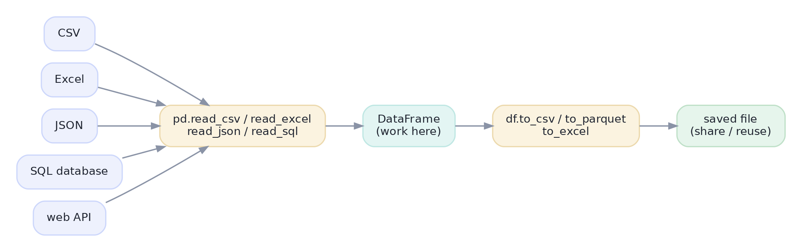

Loading & Saving Data
Read messy real-world files robustly (encodings, dtypes, dates) and save clean results.
Every analysis begins by loading data and ends by saving results — and both are messier in real life than any tutorial admits. Files come with odd delimiters, wrong encodings, numbers stored as text, and dates as strings. Knowing how to read data robustly (and write it back cleanly) is a quietly essential skill that saves hours of confusion at the start and end of every project.
ConceptReading data from anywhere
Pandas reads almost any source into a DataFrame with a read_* function: pd.read_csv (by far the most common), plus read_excel, read_json, and read_sql. From there you work in the DataFrame, and when done, write results back out.

pd.read_* brings it into a DataFrame; you analyze; then df.to_* writes it back to share or reuse.read_csv looks simple but has powerful options that fix most real-world mess:
sep=— the delimiter (comma by default; use"\t"for tabs,";"for some European files).parse_dates=["date"]— parse date columns to datetimes on load (no separate step).dtype={...}— force a column's type (e.g., keep a zip code as text).na_values=[...]— treat sentinels like"N/A","-","free"as missing.encoding=— the character encoding ("utf-8"usually;"latin-1"for some legacy files).nrows=/usecols=— read only some rows/columns (handy for peeking at a huge file).
Concept · the ritualInspect immediately after loading
The instant data lands, run the first-contact checklist (Lessons 2.7 and 3.1): df.shape, df.head(), df.dtypes, df.isna().sum(). The single most common surprise is a column you expected to be numeric showing up as object (text) — catch it here, before it silently breaks a calculation downstream.
ConceptSaving your results
When your analysis is done, write it out with df.to_csv("out.csv", index=False), df.to_parquet(...), or df.to_excel(...). The index=False matters: without it, pandas writes the row index as an extra unnamed column that confuses whoever reads the file next. Choose the format by purpose: CSV for universal sharing, Parquet for fast, compact, type-preserving storage of large data, Excel when a non-technical stakeholder will open it.
Worked exampleRead with options, then save
Here's a tiny CSV (built in memory so it runs anywhere) loaded with real-world options — parsing the date and treating "free" as missing — then written back out cleanly.
import pandas as pd
from io import StringIO
raw = StringIO(
"order_id,date,amount\n"
"1001,2025-01-05,19.99\n"
"1002,2025-01-06,free\n" # 'free' should be a missing value, not text
"1003,2025-01-07,29.50\n")
df = pd.read_csv(raw,
parse_dates=["date"], # date column -> real datetimes
na_values=["free"]) # treat 'free' as NaN
print(df)
print("\ndtypes:", dict(df.dtypes.astype(str))) # amount is float, date is datetime
clean_csv = df.to_csv(index=False) # index=False: no stray index column
print("\nsaved CSV:\n" + clean_csv) order_id date amount
0 1001 2025-01-05 19.99
1 1002 2025-01-06 NaN
2 1003 2025-01-07 29.50
dtypes: {'order_id': 'int64', 'date': 'datetime64[ns]', 'amount': 'float64'}
saved CSV:
order_id,date,amount
1001,2025-01-05,19.99
1002,2025-01-06,
1003,2025-01-07,29.5Two options did real work: parse_dates turned the date column into datetimes (so .dt works), and na_values turned "free" into a proper NaN so amount is numeric instead of text. Loading data thoughtfully — rather than read_csv and hope — prevents a whole class of downstream bugs.
★ Key points to remember
pd.read_csv(andread_excel/json/sql) load data;df.to_csv/parquet/excelsave it.- Key
read_csvoptions:sep,parse_dates,dtype,na_values,encoding,usecols/nrows. - Inspect right after loading (
.shape,.dtypes,.isna().sum()); the #1 surprise is numbers loaded as text. - When saving CSV, pass
index=Falseto avoid writing a stray index column. - Format by purpose: CSV to share, Parquet for fast/compact big data, Excel for non-technical readers.
pd.read_csv("sales.csv"), the price column is dtype object and sums concatenate instead of adding. Best fix at load time?index=False when calling df.to_csv(...)?◆ Practice▸
read_csv call to load data.csv where the file is tab-separated, the joined column holds dates, and "-" means missing.Show solution & reasoning
df = pd.read_csv("data.csv",
sep="\t",
parse_dates=["joined"],
na_values=["-"])sep="\t" reads tab-delimited data, parse_dates=["joined"] turns that column into datetimes on load, and na_values=["-"] converts the dash sentinels to NaN so they're treated as missing rather than text.
Show solution & reasoning
They saved with df.to_csv("file.csv") without index=False, so pandas wrote the row index as an unlabeled first column; on re-reading, that column shows up as 'Unnamed: 0'. The fix is to save with df.to_csv("file.csv", index=False). (To recover the existing file, read it with pd.read_csv("file.csv", index_col=0) to treat that column as the index, or just drop it.)
◎ Deep dive: CSV pitfalls, why Parquet, and handling files bigger than memory▸
The hidden traps of CSV. CSV is universal but underspecified, which is why it bites: a comma inside a field ('Smith, Jr.') needs quoting or it splits into two columns; a different encoding garbles accented characters (fix with encoding=); a leading byte-order mark (BOM) can corrupt the first column name (use encoding="utf-8-sig"); and Excel auto-formatting notoriously turns gene names and long IDs into dates or scientific notation. Reading with explicit dtype and na_values, and inspecting immediately, defends against all of these.
Why Parquet for serious data. CSV stores everything as text, loses dtypes, and is large and slow to parse. Parquet is a binary, columnar format that preserves types, compresses well, and reads selected columns fast — often 5–10× smaller and quicker than the equivalent CSV. Use CSV for human-facing interchange, but reach for Parquet (to_parquet/read_parquet) for intermediate and large datasets in a pipeline.
Bigger than memory? Chunk or go out-of-core. When a file won't fit in RAM, pd.read_csv(..., chunksize=100_000) yields the file in pieces you process one at a time, and tools like Dask, Polars, or a database handle datasets far beyond a single machine's memory. You don't need them yet, but knowing the escape hatch exists — and that the same DataFrame thinking largely carries over — means a big file is never a dead end.
Real-world data questions reward the careful loader: 'I'd inspect dtypes right after read_csv, use parse_dates and na_values to handle dates and sentinels, and dtype to keep IDs as text.' Knowing the CSV traps (encodings, commas in fields, Excel mangling) and when to prefer Parquet signals you've wrangled actual messy data, not just clean tutorial files.